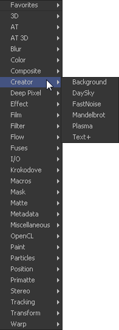
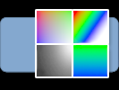
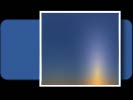
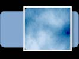
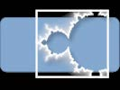
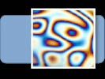
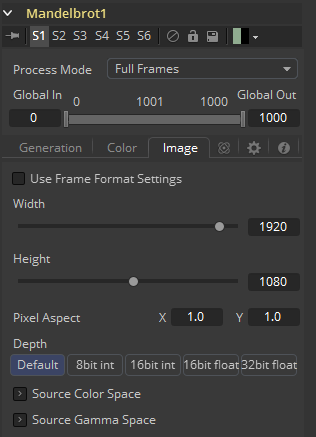
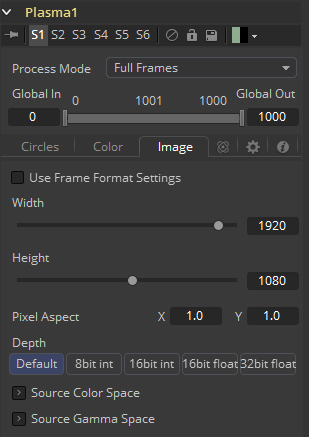

第八章 Creator Tools 创建器工具
|  |  |
|  | |
|  | |
|  | |
|  | |
Background [BG]
Background工具可用于生成从简单的彩色背景到复杂的可循环渐变的任何内容。
Color Tab 色彩选项卡

Mode 模式
此控件用于选择生成图像时背景工具使用的模式。它有四种选择。
- Solid Color 实心颜色： 此默认值创建单色图像。
- Horizontal 水平： 这会创建一个双色水平渐变。
- Vertical 竖直： 这会创建一个双色垂直渐变。
- Four Corner 四角： 这会创建一个四色角渐变。
Gradient 渐变
这将从自定义渐变创建背景。

Color 颜色
这些控件用于选择背景工具的颜色。根据所选模式，将显示一到四个颜色控件以创建线性颜色渐变背景。选择一个并从预设菜单中选择一种颜色或创建它们。或者，通过单击值框并键入值，通过键盘输入RGB值。每种颜色都有自己的Alpha值滑块，用于调整每种颜色的透明度。
Custom Gradient Controls 自定义渐变控件
显示的自定义渐变控件在本手册的工具控件（Tool Controls）一章中有详细介绍。有关设置自定义渐变来在Background工具中使用的详细信息，请参阅这
Image Tab 图像选项卡
此选项卡中的控件用于设置工具生成的图像的分辨率，颜色深度和像素宽高比。

Process Mode 处理模式
使用此菜单控件选择Fusion用于渲染图像更改的字段处理模式。默认选项由Frame Format偏好设置中的Has Fields复选框控件确定。有关字段处理的更多信息，请参阅帧格式（Frame Format）一章。
Global In and Out 全局入和出
使用此控件指定此工具在项目中的位置。使用Global In指定片段开始的帧和Global Out指定此片段在项目的全局范围内结束（包括）的帧。
该工具不会在此范围之外的帧上生成图像。
Use Frame Format Settings 使用帧格式设置
选中此复选框后，工具创建的图像的宽度，高度和像素方面将锁定为合成的Frame Format首选项中定义的值。如果更改了Frame Format偏好设置，则将更改工具生成的图像的分辨率来匹配。禁用此选项有利于以不同于最终渲染的最终目标分辨率的分辨率构建合成。
Width/Height 宽度/高度
这对控件用于设置工具创建的图像的宽度和高度尺寸。
Pixel Aspect 像素宽高比
此控件用于指定所创建图像的像素宽高比。宽高比为1:1将产生两边具有相同尺寸的正方形像素（如计算机显示监视器），而0.9:1的宽高比将产生略微矩形的像素（如NTSC监视器）。
Depth 深度
Depth按钮组用于设置Creator工具创建的图像的像素颜色深度。32位像素需要8倍像素的4倍内存，但色彩精度要高得多。浮点像素允许高于正常0..1范围的高动态范围值，用于表示比白色更亮或比黑色更暗的颜色。有关详细信息，请参阅帧格式（Frame Format）一章。
右键单击Width、Height或Pixel Aspect控件来显示列出偏好设置Frame Format选项卡中定义的文件格式的菜单。选择任何列出的选项将相应地将宽度、高度和像素宽高比设置为该格式的值。
Day Sky [DS]
DaySky发生器是Preetham、Shirley和Smits的研究论文《日光实用分析模型》（ A Practical Analytical Model for Daylight ）的操作实现。原始论文的副本可以在犹他大学视觉模拟小组的网站上找到（ http://www.cs.utah.edu/~shirley/papers/sunsky/ ）。
该工具的目的是生成在地球上特定时间和位置产生的日光的模拟，并生成表示该光的映射的高动态范围图像。它不是天空发生器，尽管它可以与云发生器或噪声工具结合产生一个。
Controls Tab 控件选项卡

Latitude, Longitude 纬度、经度
使用这些滑块来指定用于创建Day Sky模拟的纬度和经度。
Day, Month, Time 日、月、时间
使用这些控件来指定DaySky模拟的日、月和时间。
Turbidity 浊度
Turbidity使光散射和吸收，而不是通过模拟以直线传输。增加浊度会使天空模拟产生模糊的感觉，就像烟雾或大气雾霾一样。
Do Tone Mapping 使用色调映射
取消选中此复选框可禁用应用于模拟的任何色调映射。由于模拟是在32位浮点色彩空间中计算的，因此它会生成远高于1.0且远低于0.0的颜色值。色调映射是一个过程，它采用所得模拟的完整动态范围，并将数据压缩到所需的曝光范围，同时尝试尽可能多地保留高光和阴影的细节。
通常，只有在生成的图像稍后作为浮点颜色通道的一部分进行色彩校正时，才应取消选择此选项。
Exposure 曝光
使用此控件选择用于色调映射的曝光。
Advanced Tab 高级选项卡

Horizon Brightness 地平线亮度
使用此控件可调整地平线相对于天空的亮度。
Luminance Gradient 亮度渐变
使用此控件可调整将地平线与天空分开的渐变宽度。
Circumsolar Region Intensity 环日区域强度
使用此控件可调整距离太阳最近的天空的强度或亮度。
Circumsolar Region Width 环日区域宽度
使用此控件可调整受太阳影响的天空区域的宽度或大小。
Backscattered Light 反向散射光
使用此控件可增加或减少模拟中反向散射光的量。
Image Tab 图像选项卡
此选项卡中的控件用于设置工具生成的图像的分辨率、颜色深度和宽高比。

Process Mode 处理模式
使用此菜单控件选择Fusion用于渲染图像更改的字段处理模式。默认选项由Frame Format偏好设置中的Has Fields复选框控件确定。有关字段处理的更多信息，请参阅帧格式（Frame Format）一章。
Global In and Out 全局入和出
使用此控件指定此工具在项目中的位置。使用Global In指定片段开始的帧和Global Out指定此片段在项目的全局范围内结束（包括）的帧。
该工具不会在此范围之外的帧上生成图像。
Use Frame Format Settings 使用帧格式设置
选中此复选框后，工具创建的图像的宽度，高度和像素方面将锁定为合成的Frame Format首选项中定义的值。如果更改了Frame Format偏好设置，则将更改工具生成的图像的分辨率来匹配。禁用此选项有利于以不同于最终渲染的最终目标分辨率的分辨率构建合成。
Width/Height 宽度/高度
这对控件用于设置工具创建的图像的宽度和高度尺寸。
Pixel Aspect 像素宽高比
此控件用于指定所创建图像的像素宽高比。宽高比为1:1将产生两边具有相同尺寸的正方形像素（如计算机显示监视器），而0.9:1的宽高比将产生略微矩形的像素（如NTSC监视器）。
Depth 深度
Depth按钮组用于设置Creator工具创建的图像的像素颜色深度。32位像素需要8倍像素的4倍内存，但色彩精度要高得多。浮点像素允许高于正常0..1范围的高动态范围值，用于表示比白色更亮或比黑色更暗的颜色。有关详细信息，请参阅帧格式（Frame Format）一章。
右键单击Width、Height或Pixel Aspect控件来显示列出偏好设置Frame Format选项卡中定义的文件格式的菜单。选择任何列出的选项将相应地将宽度、高度和像素宽高比设置为该格式的值。
Fast Noise [FN]
Fast Noise工具是一种非常快速和灵活的柏林噪声（Perlin Noise）发生器。它可以用于各种各样的效果，从云和旋转的雾到波浪、水的焦散、风格化的火和烟雾和其他有机纹理。它作为其他效果的噪声源也是非常宝贵的，例如热闪光、粒子系统和杂躁的贴图。
Noise Tab 噪声选项卡

Discontinuous 不连续
通常，噪声函数在值之间进行插值来创建平滑连续的结果渐变。启用此复选框可沿某些噪声等值线创建硬间断线。结果将产生截然不同的效果。
Inverted 反转
选中此复选框可反转噪声，从而创建原始图案的负像。这在启用Discontinuous时最有效。
Center 中心
使用Center坐标控制平移和移动噪声图案。
Detail 细节
增加此滑块的值可在噪声结果中生成更高级别的细节。较大的值会增加更多层的渐详细的噪声，而不会影响整体图案。较高的值渲染需要更长时间，但可以产生更自然的结果。
Brightness 亮度
此控件会在应用任何渐变颜色映射之前调整噪声贴图的整体亮度。在Gradient模式下，这与Offset控件具有类似的效果。
Contrast 对比度
此控件会在任何渐变颜色映射之前增加或减少噪声贴图的整体对比度。它可以增大噪声的影响，并扩大在Gradient模式下应用的颜色范围。
Lock and Scale X/Y 锁定和缩放X/Y
可以使用Scale滑块调整噪声贴图的大小，将其从整个图像的温和变化更改为更紧密的整体纹理效果。通过单击上面的Lock X/Y复选框，可以将Scale滑块分离为独立的X轴和Y轴缩放滑块，这也许对于拉丝金属效果有用。
Angle 角度
使用Angle控件旋转噪声图案。
Seethe 沸腾
调整此指轮控件以针对不同的噪声贴图插入噪声贴图。这将导致噪音的爬移，如漂移或流动。必须对此控件进行动画处理才能影响渐变，或者您可以使用下面的Seethe Rate控件。
Seethe Rate 沸腾率
与上面的Seethe控件一样，Seethe Rate也会使噪声图发生变化。Seethe Rate定义噪声每帧改变的速率，自动引起噪声的动画漂移，而不需要样条动画。
Color Tab 颜色选项卡
Two Color 双色
使用简单的双色渐变为噪声贴图着色。噪声函数将从第一种颜色平滑过渡到第二种颜色。
Gradient 渐变
Fusion中的Advanced Gradient控件用于更好地控制与噪声贴图一起使用的颜色渐变。选择此模式时出现的控件将在本手册的工具控件（Tool Controls ）一章中进行深入介绍。有关设置自定义渐变以在Fast Noise工具中使用的详细信息，请参阅这章。
Image Tab 图像选项卡
此选项卡中的控件用于设置工具生成的图像的分辨率、色彩深度和像素宽高比。

Process Mode 处理模式
使用此菜单控件选择Fusion用于渲染图像更改的字段处理模式。默认选项由Frame Format偏好设置中的Has Fields复选框控件确定。有关字段处理的更多信息，请参阅帧格式（Frame Format）一章。
Global In and Out 全局入和出
使用此控件指定此工具在项目中的位置。使用Global In指定片段开始的帧和Global Out指定此片段在项目的全局范围内结束（包括）的帧。
该工具不会在此范围之外的帧上生成图像。
Use Frame Format Settings 使用帧格式设置
选中此复选框后，工具创建的图像的宽度，高度和像素方面将锁定为合成的Frame Format首选项中定义的值。如果更改了Frame Format偏好设置，则将更改工具生成的图像的分辨率来匹配。禁用此选项有利于以不同于最终渲染的最终目标分辨率的分辨率构建合成。
Width/Height 宽度/高度
这对控件用于设置工具创建的图像的宽度和高度尺寸。
Pixel Aspect 像素宽高比
此控件用于指定所创建图像的像素宽高比。宽高比为1:1将产生两边具有相同尺寸的正方形像素（如计算机显示监视器），而0.9:1的宽高比将产生略微矩形的像素（如NTSC监视器）。
Depth 深度
Depth按钮组用于设置Creator工具创建的图像的像素颜色深度。32位像素需要8倍像素的4倍内存，但色彩精度要高得多。浮点像素允许高于正常0..1范围的高动态范围值，用于表示比白色更亮或比黑色更暗的颜色。有关详细信息，请参阅帧格式（Frame Format）一章。
右键单击Width、Height或Pixel Aspect控件来显示列出偏好设置Frame Format选项卡中定义的文件格式的菜单。选择任何列出的选项将相应地将宽度、高度和像素宽高比设置为该格式的值。
Mask Map Inputs 遮罩贴图输入
这些外部连接允许您使用遮罩分别控制每个像素的Noise Detail和Brightness控件的值。这会有一些有趣和创造性的效果。
Noise Detail Map 噪声细节贴图
连接到噪声细节贴图的软边遮罩将提供平坦的噪声贴图（零细节），其中遮罩为黑色，完整细节为白色，而中间值平滑地减少细节。它在任何渐变颜色贴图之前应用。这对于在特定区域应用最大噪声细节非常有帮助，同时在其他地方平稳地消失。
Noise Brightness Map 噪声亮度贴图
连接到此输入的遮罩可用于完全控制噪声贴图，例如在某些区域中对其进行增强，将其与其他纹理组合，或者如果将Detail设置为0，则完全替换Perlin Noise贴图。
Mandelbrot [MAN]
该工具基于Mandelbrot分形理论集创建图像样式。
Generation Tab 生成选项卡

Position X and Y X和Y位置
这指定图像的水平和垂直位置或种子点。
Zoom 缩放
缩放放大或缩小图案。所有放大倍数都会重新计算，所以缩放没有实际限制。
Escape Limit 逃逸极限
定义迭代计算中止的点。较低的值会导致光晕模糊。
Iterations 迭代
这决定了集合的重复性。使用动画时，它会模拟该组的增长。
Rotation 旋转
这会旋转图案。每个新角度都需要重新计算图像。
Color Tab 色彩选项卡

Grad Method 渐变方法
使用此控件可确定在图案边界处应用的渐变类型。
- Continuous Potential 连续潜在： 这会使图案的边缘与背景颜色混合。
- Iterations 迭代： 这导致图案的边缘是实心的。
Gradient Curve 渐变曲线
这会影响从图案到背景颜色的渐变宽度。
R/G/B/A 相位/重复
设置图案生成器的颜色值。
Image Tab 图像选项卡
此选项卡中的控件用于设置工具生成的图像的分辨率、色彩深度和像素宽高比。

Process Mode 处理模式
使用此菜单控件选择Fusion用于渲染图像更改的字段处理模式。默认选项由Frame Format偏好设置中的Has Fields复选框控件确定。有关字段处理的更多信息，请参阅帧格式（Frame Format）一章。
Global In and Out 全局入和出
使用此控件指定此工具在项目中的位置。使用Global In指定片段开始的帧和Global Out指定此片段在项目的全局范围内结束（包括）的帧。
该工具不会在此范围之外的帧上生成图像。
Use Frame Format Settings 使用帧格式设置
选中此复选框后，工具创建的图像的宽度，高度和像素方面将锁定为合成的Frame Format首选项中定义的值。如果更改了Frame Format偏好设置，则将更改工具生成的图像的分辨率来匹配。禁用此选项有利于以不同于最终渲染的最终目标分辨率的分辨率构建合成。
Width/Height 宽度/高度
这对控件用于设置工具创建的图像的宽度和高度尺寸。
Pixel Aspect 像素宽高比
此控件用于指定所创建图像的像素宽高比。宽高比为1:1将产生两边具有相同尺寸的正方形像素（如计算机显示监视器），而0.9:1的宽高比将产生略微矩形的像素（如NTSC监视器）。
Depth 深度
Depth按钮组用于设置Creator工具创建的图像的像素颜色深度。32位像素需要8倍像素的4倍内存，但色彩精度要高得多。浮点像素允许高于正常0..1范围的高动态范围值，用于表示比白色更亮或比黑色更暗的颜色。有关详细信息，请参阅帧格式（Frame Format）一章。
右键单击Width、Height或Pixel Aspect控件来显示列出偏好设置Frame Format选项卡中定义的文件格式的菜单。选择任何列出的选项将相应地将宽度、高度和像素宽高比设置为该格式的值。
Plasma [PLAS]
此背景生成工具使用四个圆圈形图案生成类似于等离子体（Plasma）的图像。它可用作阴影和变形工具的变形图案，并可创建各种其他有用的形状和图案。另见Fast Noise工具。
Circles Tab 圆圈选项卡

Scale 缩放
Scale控件用于调整创建的模式的大小。
Operation 运算
此菜单中的选项确定四个圆圈相交时的数学关系。
Circle Type 圆圈类型
选择要使用的圆圈类型。
Circle Center 圆圈中心
报告并更改圆心的位置。
Circle Scale 圆圈比例
确定要用于图案的圆圈的大小。
Color Tab 色彩选项卡

Phase 相位
Phase改变整个图像的颜色相位。使用动画时，会产生迷幻的色彩循环。
R/G/B/A Phases R/G/B/A相位
更改各个颜色通道和alpha的相位。使用动画时，会创建颜色循环效果。
Image Tab 图像选项卡
此选项卡中的控件用于设置工具生成的图像的分辨率、色彩深度和像素宽高比。

Process Mode 处理模式
使用此菜单控件选择Fusion用于渲染图像更改的字段处理模式。默认选项由Frame Format偏好设置中的Has Fields复选框控件确定。有关字段处理的更多信息，请参阅帧格式（Frame Format）一章。
Global In and Out 全局入和出
使用此控件指定此工具在项目中的位置。使用Global In指定片段开始的帧和Global Out指定此片段在项目的全局范围内结束（包括）的帧。
该工具不会在此范围之外的帧上生成图像。
Use Frame Format Settings 使用帧格式设置
选中此复选框后，工具创建的图像的宽度，高度和像素方面将锁定为合成的Frame Format首选项中定义的值。如果更改了Frame Format偏好设置，则将更改工具生成的图像的分辨率来匹配。禁用此选项有利于以不同于最终渲染的最终目标分辨率的分辨率构建合成。
Width/Height 宽度/高度
这对控件用于设置工具创建的图像的宽度和高度尺寸。
Pixel Aspect 像素宽高比
此控件用于指定所创建图像的像素宽高比。宽高比为1:1将产生两边具有相同尺寸的正方形像素（如计算机显示监视器），而0.9:1的宽高比将产生略微矩形的像素（如NTSC监视器）。
Depth 深度
Depth按钮组用于设置Creator工具创建的图像的像素颜色深度。32位像素需要8倍像素的4倍内存，但色彩精度要高得多。浮点像素允许高于正常0..1范围的高动态范围值，用于表示比白色更亮或比黑色更暗的颜色。有关详细信息，请参阅帧格式（Frame Format）一章。
右键单击Width、Height或Pixel Aspect控件来显示列出偏好设置Frame Format选项卡中定义的文件格式的菜单。选择任何列出的选项将相应地将宽度、高度和像素宽高比设置为该格式的值。
Text Plus [TXT+]
Fusion的文字工具是一类高级的字符生成器，能够使用3D变换、多样式和多层着色。可以将文本布置到用户定义的框架、圆圈或路径上。
计算机上安装的任何True Type或Postscript 1字体均可用于创建文本。对多字节和Unicode字符的支持允许以任何语言生成文本，包括从右到左和垂直方向的文本。
该工具生成2D图像。若要生成带有可选倒角的挤出的3D文本，请参见Text 3D工具。
Text Tab 文本选项卡

Size 尺寸
此控件用于增加或减小文本的尺寸。这不像在文字处理器中选择点尺寸。尺寸是相对于图像的宽度。
Font 字体
Font控件用于选择Fusion用来创建文本的字体。Fusion对第三方字体管理器的支持有限。由第三方字体管理器管理的字体可能需要移动Mac OS X或Windows字体文件夹。
Underline and Strikeout 下划线和删除线
这些复选框允许在所使用的字体中添加强调样式。
Styled Text 样式文字
在此选项卡的编辑框中，输入要创建的文本。可以在此框中键入任何常用字符。也可以使用常用的系统剪贴板快捷方式（使用Command-C或Ctrl-C复制，使用Command-X或Ctrl-X剪切，使用Command-V或Ctrl-V粘贴），而右键单击编辑框会显示自定义上下文菜单。
Styled Text上下文菜单具有以下选项。
Character Level Styling 字符级别样式定义
此命令启用Character Level Styling，这将在Modifiers选项卡中放置一组控件。使用这些控件可以影响字体、颜色、大小和应用于单个字符变换的更改。
Comp Name 合成名称
Comp Name将合成的名称放在编辑框中，通常用于创建slate。
Follower 跟随器
跟随器是一个文本修改器，可用于在文本中的每个字符上波纹化应用于文本的动画。请参阅本节末尾的文本修改器。
Publish 发布
“发布”文本来让其他的文本工具连接。
Text Scramble 文本拼凑
文本修改器ID用于将文本中的字符随机化。请参阅本节末尾的文本修改器。
Text Timer 文本计时器
一个用于从指定时间倒数或输出当前日期和时间的文本修改器。请参阅本节末尾的文本修改器。
Time Code 时间码
一个用于输出当前帧的时间码文本修改器。请参阅本节末尾的文本修改器。
Connect To 连接到
使用此选项可以将此文本工具生成的文本连接到另一个工具的已发布的输出。
Write On 写上
此范围控件用于将简单的写上（Write On）和擦除（Write Off）效果快速应用于文本。若要创建写上效果，请在所需的时间内将控件的End部分从1设置为0。若要创建擦除效果，请将范围控件的Start部分设置为从0到1的动画。
International Font Controls 国际字体控件
Subset 子集
此下拉菜单可用于选择特定于字体子集的语言。
Direction 方向
该菜单提供用于确定文本写入方向的选项。
Line Direction 线方向
这些菜单选项用于确定文字流从上向下、从上向下还是从左向右或从左向右。
Advanced Font Controls 高级字体控件
Force Monospaced 强制等宽
此滑块控件可用于替代字体中定义的字距调整（字符之间的间距）。将此滑块设置为零（默认值）将导致Fusion完全依赖于每个字符定义的字距调整。值为1会使字符之间的间距完全均匀，或等宽。
Do Font Defined Kerning 使用字体定义的字距调整
这将启用按true type指定的字距调整，并且默认情况下处于启用状态。
Font Defined Glyphs, Reordering and Ligation 字体定义的字形、重排和连笔
除非支持人员另有指示，否则请保留Font Defined Glyphs, Reordering and Ligation复选框。
Manual Font Kerning/Placement 手动字距调整/放置
右键单击该标签将显示一个上下文菜单，可用于为文本的字距设置动画。有关手动字距调整的详细信息，请参阅本章稍后的该工具文档的工具栏（Toolbar）部分。
Layout Tab 布局选项卡
用于放置文本的控件位于Layout选项卡中。可以使用按钮组选择四种布局类型之一。

- Point 点： Point布局是最简单的布局模式。文本围绕着可调整的中心点排列。
- Frame 框架： Frame布局允许您定义用于对齐文本的矩形框架。对齐控件用于在框架边界内垂直和水平对齐文本。
- Circle 圆形： Circle布局将文本放置在圆形或椭圆形的曲线周围。可以控制圆形的直径和宽度。当布局设置为该模式时，Alignment控件将确定文本是沿着圆的边缘的内部还是外部定位，以及如何对齐多行文本。
- Path 路径： Path布局使您可以沿路径的边缘调整文本的形状。该路径可以简单地用于为文本添加样式，也可以使用选择此模式时出现的Position on Path控件对其进行动画处理。
Center X, Y and Z 中心X、Y和Z
这些控件用于在空间中放置布局元素的中心。X和Y是屏幕上的控件，Center Z是工具控件中的滑块。
Size 尺寸
此滑块用于控制布局元素的比例。
Layout Rotation 布局旋转
选中此复选框，将出现另一组选项来设置文本旋转的选项。
Rotation Order 旋转顺序
此按钮组使您可以选择将3D旋转应用于文本的顺序。
Angle X, Y and Z 角度X、Y和Z
这些角度控件可用于调整布局元素沿任何轴的角度。
Width and Height 宽度和高度
当布局模式设置为Circle或Frame时，Width控件可见。仅当布局模式设置为Frame时，Height控件才可见。它们用于调整布局元素的尺寸和外观。
Perspective 透视
此滑块控件用于从Angle X, Y and Z控件应用的旋转中添加或移除透视。
Fit Characters 适应字符
仅当布局类型设置为Circle时，此菜单控件才可见。此菜单用于选择字符沿圆周的间距。
Position On Path 路径上的位置
Position On Path控件用于控制文本在路径上的位置。小于0或大于1的值将导致文本在最后两个关键帧之间的路径向量相同的方向上超出路径。
Background Color 背景色
仅当布局类型设置为Path时，此标签才会出现。它用于提供对上下文菜单的访问，该菜单提供用于将路径连接到流中的其他路径以及随时间推移对路径的形状进行动画处理的选项。
Right-Click Here for Shape Animation 右键单击此处使用形状动画
有关详细信息，请查阅本手册的运动路径（Motion Paths）一章。
Horizontal and Vertical Alignment 水平和垂直对齐
用于控制文本的垂直和水平对齐的两组相同的控件。使用第一个按钮组选择文本的对齐方式。下面的滑块控制对齐方式。
Transform Tab 变换选项卡

Select Transform 选择变换
有三个按钮来确定受此选项卡中应用的变换影响的文本部分。变换可以同时应用于行、单词和字符级别。此菜单仅用于将可见控件的数量保持在合理的数量。
- Characters 字符： 文本的每个字符都沿其自身的中心轴变换。
- Words 词： 每个单词在单词的中心轴上分别变换。
- Lines 行： 文本的每一行在该行的中心轴上分别进行变换。
Spacing 间距
Spacing滑块用于调整每行、单词或字符之间的间距。小于1的值通常会导致字符开始重叠。
Pivot X, Y and Z 中心X、Y和Z
这提供了轴精确位置的控制。默认情况下，该轴位于所计算的线条、单词或字符的中心。Axis控件用作偏移量，因此该控件中的
0.1, 0.1
值将导致每个文本元素的轴向下和向右移动。Z轴滑块中的正值将使该轴沿该轴进一步移动（远离监视器）。负值将使旋转轴更近。
Rotation Order 旋转顺序
这些按钮用于确定应用转换的顺序。XYZ表示将旋转应用于X，然后是Y，最后是Z。
Angle X, Y and Z 角度X、Y和Z
这些控件可用于调整三个维度中任何一个的文本元素的角度。
Shear X and Y 剪切X和Y
调整这些滑块可修改文本元素沿X轴和Y轴的倾斜度。
Size X and Y 尺寸X和Y
调整这些滑块可修改文本元素沿X和Y轴上的尺寸。
Shading Tab 着色选项卡
Shading选项卡提供控件来调整文本的着色、纹理和柔度。也可以从此选项卡控制变换，将额外的变换独立地应用于多达八个单独的文本着色元素。Number菜单用于选择受此选项卡中控件调整影响的元素。


Name 名称
此文本标签可用于为每个着色元素分配一个更具描述性的名称。
Enabled 启用
选择此复选框以启用或禁用每一层着色元素。默认情况下，元素1是启用的。除非选中此复选框，否则不会显示着色元素的控件。
Opacity 不透明度
Opacity滑块控制着色元素的整体透明度。通常，将不透明度分配给着色元素比调整应用于该元素的颜色的Alpha更好。
Priority Back/Front 优先后/前
此滑块确定着色元素的图层顺序，也称为Z顺序。向右滑动控件，使元素更靠近前面。将其向左移动可将一个着色元素隐藏在另一个着色元素之后。
Overlap 重叠
Overlap用于确定当同一着色元素的部分重叠时如何处理着色。将此菜单设置为透明会导致像素的颜色和Alpha通道设置为0（透明）。
- Composite 合成： 此重叠选项会将着色合并到自身顶部。
- Solid 实心： 此选项将重叠区域中的像素设置为纯不透明。
- Transparent 透明： 此选项将重叠区域中的像素设置为纯透明。
Element Type (Buttons) 元素类型（按钮）
此菜单有四个选项，可控制如何将着色元素应用于文本。根据所选元素的类型，下面将出现不同的控件。
- Text Fill 文字填充： 着色元素将应用于整个文本。这是默认模式。
- Text Outline 文字描边： 着色元素被绘制为围绕文本边缘的轮廓。
- Border Fill 边框填充： 着色元素填充文本周围的边框。此着色模式提供了五个其他控件。
- Border Outline 边框描边： 边框轮廓模式在围绕文本的边框周围绘制轮廓。它提供了几个附加控件。
Thickness 厚度
（仅Outline）使用此滑块控件调整轮廓的厚度。值越高，轮廓越粗。
Adapt Thickness To Perspective 使厚度适应透视
（仅Outline）选择此复选框将使您的轮廓在文本距离相机更远的地方变细，而在文本离相机更远的地方变粗。这将为3D转换后的文本创建一个更加逼真的轮廓，但渲染时间更长。
Outside Only 仅外部
（仅Outline）选择此复选框将导致仅在文本的外侧边缘上绘制轮廓。默认情况下，轮廓在边缘居中，部分与文本重叠。
Join Style 加入类型
（仅Outline）此菜单提供有关如何绘制轮廓转角的选项。选项包括Sharp（锐角），Rounded（圆角）和Beveled（斜角）。
Line Style 线类型
（仅Outline）此菜单提供对线条样式的额外控制。除了默认的实线之外，还可以使用多种破折号和点图案。
Level 级别
（仅Border Fill）这用于控制文本边框填充的部分。
- Text 文本： 这会在整个文本周围绘制边框。
- Line 线： 这会在每行文本周围绘制边框。
- Word 词： 这会在每个单词周围绘制边框。
- Character 字符： 这会在每个字符周围绘制边框。
Extend Horizontal and Extend Vertical 水平延伸和垂直延伸
（仅Border）使用此滑块更改每个边框的尺寸。
Round 圆角
（仅边框）此滑块用于将边框的边缘圆角化。
Color Types 颜色类型
除了纯色着色外，还可以将外部图像映射到文本上。此菜单用于确定着色元素的颜色是从用户选择的颜色派生还是从外部图像源获取。根据所选的颜色类型，下面将显示不同的控件。
- Solid Mode 纯色模式： 当Type菜单设置为Solid模式时，将提供颜色选择器控件来选择文本的颜色。
- Image Mode 图像模式： 流程中工具的输出将为文本添加纹理。选择此选项后，将使用显示的Color Image控件来选择使用的工具。
- Gradient Mode 渐变模式： 当Type菜单设置为Solid模式时，将提供渐变颜色控件来选择文本的颜色。
Color Image 色彩图像
（仅Image Mode）此Color Image文本框用于在将提供图像的流程中输入工具的名称。您可以键入名称、将工具从流程中拖到文本框中或右键单击并从上下文菜单中选择Connect To以选择要使用的图像。
Shading Mapping 着色映射
（仅Image Mode）该控件可以用选择图像映射为纹理时的模式。
- Stretch To Fit 拉伸以适应： 选择该选项会使图像拉伸来适应文本，这是默认选项。
- Maintain Aspect 保持宽高比： 选择该选项会使图像保持自己的宽高比。
Mapping Angle 映射角度
（仅Image Mode）Mapping Angle菜单用于选择图像映射到文本的角度。
Mapping Size 映射尺寸
（仅Image Mode）Mapping Size菜单用于选择图像映射到文本的尺寸。
Mapping Aspect 映射宽高比
（仅Image Mode）Mapping Size菜单用于选择图像映射到文本的宽高比。
Mapping Level 映射级别
- Full Image 完整图像： 此选项将整个图像应用于文本。
- Text 文本： 此选项对整个文本集应用图像。
- Line 行： 此选项每行文本应用图像。
- Word 单词： 此选项对每个文本单词应用图像。
- Character 字符： 此选项对每个字符应用图像。
Softness X and Y 柔度X和Y
这些滑块控件用于创建着色元素的文本轮廓的柔和度。分别为X轴和Y轴提供控制。
Softness On Fill Color Too 柔软度也应用于填充色
选中此复选框将导致模糊（柔度）也应用于着色元素。当应用于由外部图像着色的着色元素时，效果最佳。
Softness Glow 柔度发光
该滑块将向着色元素的软化部分施加发光。
Softness Blend 柔度混合
此滑块控制将柔度控件结果与原始图像融合在一起的量。它可用于淡化软化操作的结果。
Transform Controls 变换控件
在Shading选项卡中选择Transform按钮将显示用于对着色元素执行变换的控件。这些控件的工作方式与Alignment和Layout选项卡中的等效控件完全相同，并添加了Center Offset控件。
Offset X, Y and Z 偏移X、Y和Z
这些控件用于为着色元素应用与文本的全局中心（在Layout标签中设置的）偏移量。坐标控件中的值
X0.0, Y0.1
将使着色元素的图像中心沿Y轴位于屏幕的下方10％。Z-Offset滑块控件中的正值会将中心推离相机更远，而正值会使它更靠近相机。
Tabs Tab 制表符选项卡
Tabs区域中的控件用于配置8个单独的制表符的水平屏幕位置。文本中的所有制表符都将符合这些位置。

由于Fusion使用Tab键前进到下一个控件，因此无法直接在样式文本输入中输入标签。使用以下方法输入选项卡。
（译注：是可以直接输入的。）
Copy and Paste 复制和粘贴
从另一个文档（如Mac OS X上的Notes或Windows上的记事本）复制一个制表符，并将其粘贴到文本框中。
Position 位置
此控件用于设置选项卡在框架中的水平位置。值的范围是0.0到1.0，其中0是框架的最左侧，而1是框架的最右侧。当选择了Text工具并且Tabs选项卡处于打开状态时，选项卡的位置将在查看器中由一条细的垂直白线指示。
Alignment 对齐
每个选项卡可以设置为左对齐，右对齐或居中。 此滑块的范围是-1.0到1.0，其中-1.0是左对齐的标签，0.0是居中的标签，而1.0是右对齐的标签。 标签线顶部的小白框表示流程中存在标签。在这些框中单击将在三个状态之间切换选项卡的对齐方式。
Rendering Tab 渲染选项卡

Image Shading Sampling 图像着色采样
使用此按钮组可以选择用于着色渲染和转换的采样类型。默认Pixel着色足以完成90％的任务。要减少文本中可检测到的混叠，请将采样类型设置为Area。这比较慢，但可能会产生更好的质量结果。设置为None将加快渲染速度，但是不应用其他采样，因此质量会降低。
Image Shading Edges 图像着色边缘
使用此按钮组可以选择在着色元素包裹文本边缘时如何处理应用于图像着色元素的变换。
Sort Shading Elements 排序着色元素
此按钮选择确定着色元素的顺序。默认值为By Priority（按优先级），它会根据每个着色元素控件中的Priority Back/Front滑块将着色元素从前到后组织。
选择By Depth (Z-Position)（按深度（Z-位置））选项将根据每个元素的Z位置（由元素的转换设置）重新组织它们。
Clip Characters Behind Camera 裁剪相机后面的字符
此复选框确定是否将裁剪超出摄像机平面的字符，或者它们是否会向图像中心反射回来。通常应该启用裁剪功能，但是禁用裁剪功能后，会产生一些有趣的效果。
Anti-Aliasing 抗锯齿
此滑块用于增加或减少应用于文本的抗锯齿量。较高的值表示渲染时间成指数增长，而较低的值则以质量为代价减少渲染时间。
Render to Flash File 渲染到Flash文件
单击此按钮可将Text工具的输出渲染为Adobe Flash文件。
Text+ Toolbar Text+工具栏
选择Text工具后，查看器中将出现一个工具栏。

Allow Typing In Preview Window 允许在预览窗口中键入
启用此按钮可以在查看器中直接键入和编辑文本，单击文本以产生可以定位在文本内的光标。可以使用箭头键移动光标。可以正常地键入。
Allow Manual Kerning 允许手动字距调整
此按钮启用手动字距调整，它会覆盖通常应用于文本的自动字距调整。在查看器中，每个文本字符下方都会出现一个小红点。在点上拖动以重新定位字符。同时选择多个字符并将它们一起移动。拖动时按住Option或Alt键，可将移动限制在单个轴上。
使用键盘上的箭头键可以手动调整所选字符的位置。按住Command或Ctrl键的同时，按箭头键以较小的增量移动字符。Shift将以更大的增量移动字符。
要设置每个字符的位置动画，请右键单击Text标签的Advanced Font控件下方的控件标签Manual Font Kerning/Placement（手动字距调整/放置），然后从上下文菜单中选择Animate。每次移动字符时，都会在动画样条线上设置一个新关键点。与折线遮罩动画一样，所有字符都使用相同的样条进行动画处理。
No Text Outline 无文字描边
此按钮禁用在文本边缘周围绘制任何轮廓。该描边不是文本的一部分。它是一个屏幕控件，用于帮助识别文本的位置。
Text Outline Outside Frame Only 仅边框外侧文字轮廓
此按钮在可见边框之外的文本边缘周围绘制轮廓。这对于查找已移出屏幕且不再渲染可见结果的文本很有用。
Show Always Text Outline 显示始终文本描边
无论文本在框架内是否可见，此按钮始终会在文本边缘周围绘制轮廓。
Modifiers
Character Level Styling
Character Level Styling修改器仅在Text+工具上生效。您可以直接在视图中选择单个字符，并将不同的文本属性应用于它们。考虑每行开头的大写字母，一个单词使用不同的字体，彩色高亮显示等等。
可以通过右键单击Text+工具的Styled Text字段并选择Character Level Styling来应用它。
字符级样式只能直接应用于Text+工具，而不能应用于Text 3D工具。 但是通过复制Text+，右键单击Text 3D并选择Paste Settings，可以将Text+工具中的样式化文本应用于Text 3D工具。
Text Tab 文本选项卡

Text Controls, Alignment, Transform and Shading Tab 文本控件、对齐、变换和着色选项卡
有关详细信息，请参见Text+工具文档。
Clear Character Styling on Selection 清除选中的字符样式
对当前所选字符所做的所有更改将被重置。
Clear all Character Styling 清除所有字符样式
所有字符属性都将重置为其原始值。
Comp Name
Comp Name仅适用于Text+工具。它将样式文本设置为当前的合成名称。这对于自动化每日渲染的烧入非常有用。另请参见TimeCode修改器。可以通过右键单击Text+工具的Styled Text字段并选择Comp Name来应用它。
Controls 控件
此修改器没有控件。
有关更多详细信息，请参见Text+ Tool文档。
Follower
Follower仅适用于Text+和Text3D工具。该工具可实现多种炫酷的图形效果。基本思想是为单个角色的参数设置动画，而其他角色将延迟跟随该动画。可以通过右键单击Text工具的Styled Text字段并选择Follower来应用它。
Timing Tab 计时选项卡

Range 范围
允许用户选择是否应影响所有字符或仅影响选定范围。您可以直接在屏幕上拖动选择一系列字符。
Order 顺序
确定字符受影响的顺序。注意，空格也被视为字符。可用的选项有：
- Left to right 从左至右： 动画从左至右贯穿所有字符。
- Right to left 从右至左： 动画从右至左贯穿所有字符。
- Inside out 从内至外： 动画从角色的中心点向边缘对称地波动。
- Outside in 从外至内： 动画从角色的边缘向中心点对称地波动。
- Random but one by one 随机但一一跟随： 该动画将应用于随机选择的字符，但一次仅影响一个字符。
- Completely random 完全随机： 动画将应用于随机选择的字符，一次影响多个字符。
- Manual curve 手动曲线： 受影响的字符可以通过滑块指定。
Delay Type 延迟类型
确定对动画应用哪种延迟。可用的选项有：
- Between Each Character 每个字符间： 文字中的字符越多，动画结束的时间就越长。
- Between First and Last Character 第一个字符和最后一个字符间： 无论文本中有多少个字符，动画都将始终在选定的时间内完成。
Clear all Character Styling 清除所有字符样式
所有字符属性都将重置为其原始值。
Text Controls, Alignement, Transform and Shading Tab 文本控件、对齐、变换和着色选项卡
在这些选项卡中，字符的实际动画已完成。请注意，仅更改这些选项卡中的值将完全没有影响。该值需要设置动画以显示效果。
有关各种参数的详细说明，请参见Text+工具文档。
Text Scramble
Text Scramble仅适用于Text+工具。它拼凑文本，用用户自定义的其他字符随机替换字符。可以通过右键单击Text+工具的Styled Text字段并选择Text Scramble来应用它。
Controls 控件

Randomness 随机度
定义随机交换多少个字符。值为0不会改变任何字符。值为1会更改文本中的所有字符。在此拨轮应用动画从0到1，将逐渐交换所有字符。
Input Text 输入文本
这将在Text+ Styled Text中反映原始文本。可以在Text+中或此处输入文本。
Animate On Time 随时间的动画
设置后，字符将在每个新帧中随机拼凑。当Randomness设置为0时，此开关无效。
Animate On Randomness 随随机度的动画
设置后，当对Randomness拨轮设置动画时，角色将在每个新帧上随机拼凑。当Randomness设置为0时，此开关无效。
Don’t Change Spaces 不要改变空格
设置后，单个单词的长度将保持不变，尽管它们的字符会乱七八糟。
Substitute Chars 替换字符
定义用于拼凑文本的字符。
Text Timer
Text Timer仅适用于Text+工具。它使Text+工具成为倒数计时器、计时器或时钟。这对于屏幕上的实时显示或将帧的创建时间烧入到图片中非常有用。
可以通过右键单击Text+工具的Styled Text字段并选择Text Timer来应用它。
Controls 控件

Mode 模式
设置计时器工作的模式。在时钟模式下，将显示当前系统时间。
Hrs, Mins, Secs (Switches) 时、分、秒（切换）
定义应该在屏幕上显示时钟的哪一部分。
Hrs, Mins, Secs (Sliders) 时、分、秒（滑块）
设置倒数和计时器模式的开始时间。
Start 启动
启动计数器或计时器。计时器运行后切换为停止。
Reset 重置
将计数器和计时器重置为滑块设置的值。
Time Code
Time Code仅适用于Text+工具。它将Styled Text设置为基于当前框架的计数器。这对于自动化日常渲染的烧入非常有用。
可以通过右键单击Text+工具的Styled Text字段并选择Time Code来应用它。
Controls 控件

Hrs, Mins, Secs, Frms, Flds 时、分、秒、帧、字段
激活或停用这些选项来自定义时间代码显示，以分别显示小时、分钟、秒、帧和字段。仅激活帧会为您提供一个普通帧计数器。
Start Offset 起始偏移
为Fusion的当前时间引入正或负偏移，来与现有时间码匹配。
Frames per Second 每秒的帧数
这应该与您的合成的FPS设置相匹配，来提供准确的时间测量。
Drop Frame 丢帧
激活此复选框，以将时间码与具有丢帧的镜头（例如某些NTSC格式）相匹配。